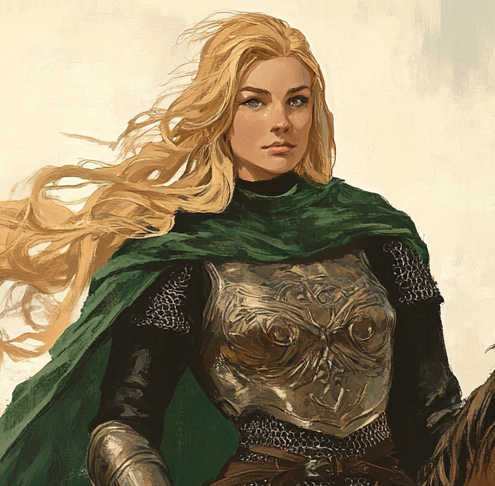

Rider Met on the Plains · Whose Mare Carried Celenneth Home

A Rohirrim woman: long fair hair, grey-green eyes, dark mailed cuirass under a green cloak, mounted. Of the éored that met Celenneth on the plains after Fangorn and carried her home to Edoras. Later one of Linnea's named Rohirrim friends.
Garin is a Rohirrim woman of an éored riding the plains east of Edoras. She and her fellow riders found Celenneth on the open plains in the long ride home after Fangorn — gone since Súlimë 5, returned at Cermië 1, nearly four months absent. Garin's mare carried Celenneth back to Edoras. Across the chapters of the ride, Garin fell for her quietly, and the chronicle has been clear: her interest is apparently obvious to everyone except its object. Celenneth did not see it. Nothing physical passed between them. Linnea later went to the stables to meet Garin before the next patrol, and the friendship that formed was named by the chronicle: Linnea built friendships with Eadwyn and Garin that are genuine and mutual.
You're as sharp as an arrow when it comes to spotting danger, but when someone pays you a compliment, you're as dull as a blunted sword. To Celenneth, on the plains
Garin's TOR2e character sheet is unfilled apart from her name. The fields below are shown as recorded; what the chronicle has visibly established is summarised in the prose of this dossier rather than fabricated on the sheet.
| Culture | Not recorded. Of Rohan by the chronicle's description. |
| Cultural Blessing | Not recorded. |
| Calling | Not recorded. |
| Distinctive Features | Not recorded. |
| Shadow Path | Not recorded. |
Not recorded.